I build web apps, APIs and tools, from club software to experiments. Beyond code: design, photography, video and a lowered S5.
Portfolio · Photography · Jogge di Balla
Skills · All projects · GitHub activity
![Skills. Backend and APIs: PHP, Yii, REST, OpenAPI, backend logic, API integrations and data synchronisation. Frontend: Vue, JavaScript, HTML, CSS, web interfaces and components. Data: MySQL, MariaDB, SQLite, complex SQL, database design and query optimisation. Testing: Cypress, Playwright and Vitest; end-to-end, unit, regression, visual and accessibility checks. AI workflows: Codex, Claude Code, MCP, custom skills, agents, hooks and plugins. AI-assisted project stack: React, TypeScript, Next.js, tRPC, Node.js, Express, Electron, Vite, Tailwind CSS, Three.js, WebGL and GLSL. Hosting: Linux, nginx and GitHub Actions; self-hosting, nginx configuration and practical basics in Git and Docker. Design and media: photography, graphic and web design, Lightroom, Photoshop, DaVinci Resolve, Canva and GIMP.](../assets/manual-mode/stack-mobile.svg)
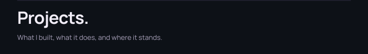
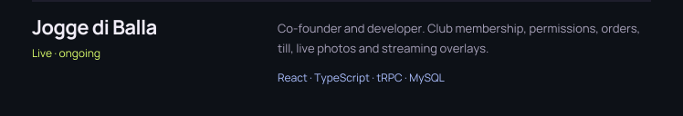
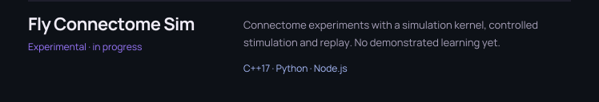
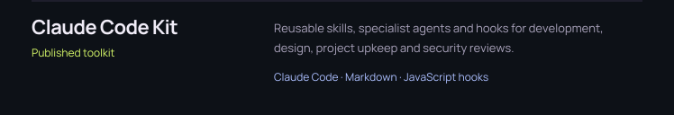
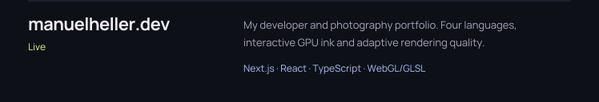
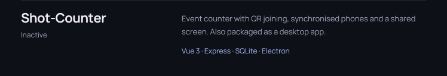
Download Shot-Counter for Windows / Linux
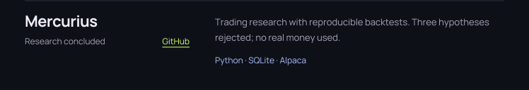
Inside Jogge di Balla: from service to kitchen and bar
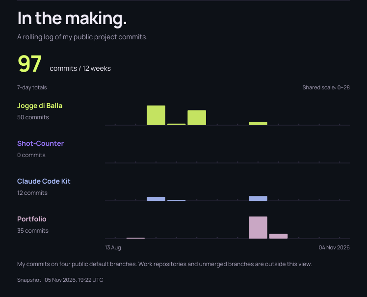
![Life, versioned as a Git branch graph. A life spine branches into career, garage, photo and club, then merges at now. Small right-hand illustrations accompany selected milestones: a mining turtle for Minecraft and Lua, a checked certificate for the EFZ, a camera capturing its first picture, and a puzzled fly at a classroom desk. The classroom is a playful metaphor, not a learning result. Career: Novartis apprenticeship in 2016, EFZ in 2020, full-stack development in 2021, APIs and data sync in 2025, AI toolkit and attempts to teach a fly through connectome experiments in 2026, with learning still pending. Garage: KTM Duke 390 in 2019, Audi TT RS in 2023, S5 in 2024. Photo: Sony α7 IV in 2023, Costa Rica in 2024, The ICE in 2025. Club: co-founder of Jogge di Balla in 2022, platform live in 2026.](../assets/manual-mode/history-mobile.svg)
A few personal defaults
[defaults]
trailing_commas = always,
curiosity = enabled
outside_the_editor = camera_or_s5
[handle_with_care]
legacy_encoding = ISO-8859-1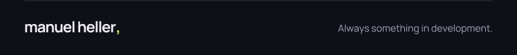